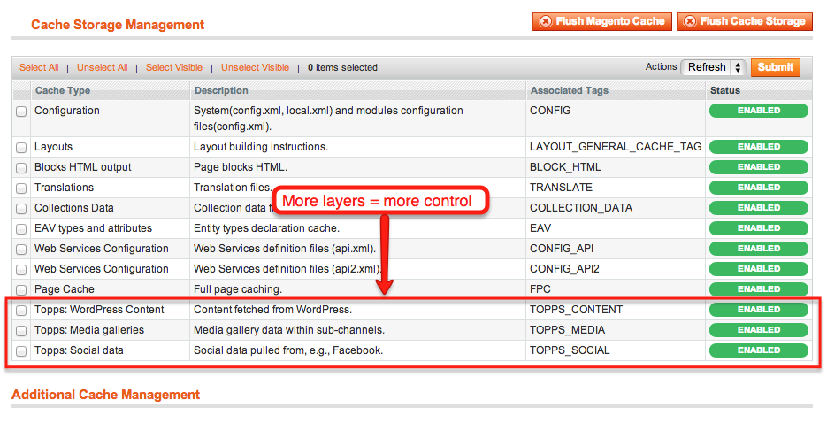

Thanks to
Tim Broder,
because I cloned your presentation code
Stupid photos offered without comment
Content types were not fully defined at project start
(nor should they be).
Pods Framework helps.
Target audience: Not CMS wizards.
Don't trust the Magento.
Keep it flexible: loose data coupling
Minimize what Magento needs to know
One page, ten thousand templates
Ten thousand templates, ten thousand blocks
Ten thousand blocks, ten thousand contexts
Simplify bender-fender handoff
Goal: One page = one query = one template
Topps_Content
Blocks are great for reusability.
Not reusing? Don't get stuck with blocks.
Page context simplifies reference.
Avoided fancy data resource layer.
Helpers get data via REST.
Helpers handle multilayered caching.
Provide monolithic data object to presentation layer.
No more "How do I access X from this template?"
Monolithic data object eases context, control.
WP serves only data.
All presentation is in Magento.
Extend JSON layer as needed.
Cache JSON responses as needed.
Mitigates performance concerns from so many REST calls
125 KB
{kind=link}
{kind=link}
{kind=link}
{kind=link}